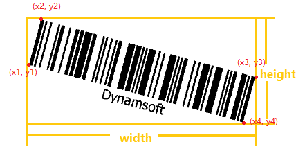

x3 Property
Description
Gets the X coordinate of (x3, y3).
Property Type
Read-Only
Syntax
.get(index).x3;Remarks
The left-most corner of the barcode is the starting point (x1, y1). The following corner points (x2, y2), (x3, y3), (x4, y4) will be returned in the clockwise direction.
